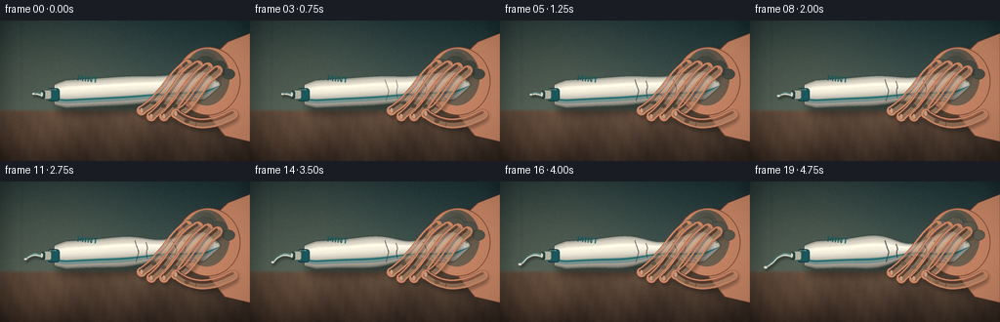
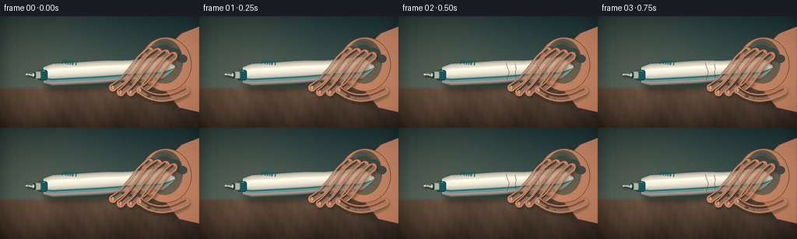

CODING AGENTS AS PIXEL WORLD MODELS
traex/DeepSeek-V4.1-Flash · mechanics_0020
点击播放 · 原生 RGB 像素
此结果可播放，但该运行尚未通过最终提交审核。页面展示不代表评测通过。
逐轮保存的候选
回放视频、检查图与代码变化。
每份候选均可单独播放。实际图片检查记录在下方工具轨迹中。
候选 01播放与检查图
点击播放 · 原生 RGB 像素


展开代码变化
--- 上一保存版本
+++ 本次保存版本
@@ -0,0 +1,747 @@
+from pathlib import Path
+
+import numpy as np
+from PIL import Image, ImageDraw, ImageFilter, ImageFont
+
+import artifact_io
+
+
+WIDTH = 256
+HEIGHT = 144
+FRAMES = 20
+FPS = 4.0
+SS = 4
+HW = WIDTH * SS
+HH = HEIGHT * SS
+
+
+def rgba_layer():
+ return Image.new("RGBA", (HW, HH), (0, 0, 0, 0))
+
+
+def sxy(point):
+ return (float(point[0]) * SS, float(point[1]) * SS)
+
+
+def sc(points):
+ return [sxy(point) for point in points]
+
+
+def catmull_rom(points, samples_per_segment=14):
+ points = np.asarray(points, dtype=np.float32)
+ padded = np.vstack([points[0], points, points[-1]])
+ output = []
+ for index in range(1, len(padded) - 2):
+ p0, p1, p2, p3 = padded[index - 1 : index + 3]
+ for t in np.linspace(0.0, 1.0, samples_per_segment, endpoint=False):
+ t2 = t * t
+ t3 = t2 * t
+ value = 0.5 * (
+ 2.0 * p1
+ + (-p0 + p2) * t
+ + (2.0 * p0 - 5.0 * p1 + 4.0 * p2 - p3) * t2
+ + (-p0 + 3.0 * p1 - 3.0 * p2 + p3) * t3
+ )
+ output.append(value)
+ output.append(points[-1])
+ return np.asarray(output, dtype=np.float32)
+
+
+def ribbon_polygon(points, widths):
+ points = np.asarray(points, dtype=np.float32)
+ widths = np.asarray(widths, dtype=np.float32)
+ if widths.size == 1:
+ widths = np.full(len(points), float(widths), dtype=np.float32)
+ tangents = np.gradient(points, axis=0)
+ lengths = np.maximum(np.linalg.norm(tangents, axis=1), 1e-4)
+ normals = np.stack([-tangents[:, 1] / lengths, tangents[:, 0] / lengths], axis=1)
+ left = points + normals * (widths[:, None] * 0.5)
+ right = points - normals * (widths[:, None] * 0.5)
+ return np.vstack([left, right[::-1]])
+
+
+def draw_ribbon(draw, points, widths, fill, outline=None, outline_width=1.0):
+ polygon = ribbon_polygon(points, widths)
+ draw.polygon(sc(polygon), fill=fill)
+ radius = float(np.mean(widths)) * 0.5
+ for point in (points[0], points[-1]):
+ x, y = point
+ draw.ellipse(
+ sc(
+ [
+ (x - radius, y - radius),
+ (x + radius, y + radius),
+ ]
+ ),
+ fill=fill,
+ )
+ if outline is not None:
+ draw.line(
+ sc(np.vstack([polygon, polygon[0]])),
+ fill=outline,
+ width=max(1, round(outline_width * SS)),
+ joint="curve",
+ )
+
+
+def paste_curve():
+ controls = np.array(
+ [
+ [42.0, 76.0],
+ [35.0, 75.0],
+ [28.0, 78.0],
+ [23.0, 83.0],
+ [16.0, 88.0],
+ ],
+ dtype=np.float32,
+ )
+ return catmull_rom(controls, 24)
+
+
+PASTE_FULL = paste_curve()
+
+
+def paste_subset(pressure):
+ cumulative = np.r_[
+ 0.0,
+ np.cumsum(np.linalg.norm(np.diff(PASTE_FULL, axis=0), axis=1)),
+ ]
+ fraction = 0.12 + 0.88 * pressure
+ limit = cumulative[-1] * fraction
+ count = int(np.searchsorted(cumulative, limit, side="right"))
+ count = max(4, min(count, len(PASTE_FULL)))
+ points = PASTE_FULL[:count].copy()
+ if count < len(PASTE_FULL):
+ previous = cumulative[count - 1]
+ segment = max(cumulative[count] - previous, 1e-4)
+ alpha = (limit - previous) / segment
+ points[-1] = PASTE_FULL[count - 1] * (1.0 - alpha) + PASTE_FULL[count] * alpha
+ return points
+
+
+def make_background():
+ y, x = np.mgrid[0:HH, 0:HW].astype(np.float32)
+ x /= SS
+ y /= SS
+
+ wall_t = np.clip(y / 94.0, 0.0, 1.0)
+ wall_top = np.array([28.0, 51.0, 55.0], dtype=np.float32)
+ wall_bottom = np.array([72.0, 91.0, 86.0], dtype=np.float32)
+ wall = wall_top * (1.0 - wall_t[..., None]) + wall_bottom * wall_t[..., None]
+
+ key_light = np.exp(
+ -(
+ ((x - 44.0) / 104.0) ** 2
+ + ((y - 38.0) / 83.0) ** 2
+ )
+ )
+ wall += key_light[..., None] * np.array([24.0, 18.0, 11.0], dtype=np.float32)
+
+ tile_line = np.exp(-((x - 22.0) / 0.7) ** 2)
+ wall -= tile_line[..., None] * np.array([7.0, 8.0, 7.0], dtype=np.float32)
+
+ counter_t = np.clip((y - 92.0) / 52.0, 0.0, 1.0)
+ counter_top = np.array([101.0, 80.0, 65.0], dtype=np.float32)
+ counter_bottom = np.array([54.0, 42.0, 35.0], dtype=np.float32)
+ counter = counter_top * (1.0 - counter_t[..., None]) + counter_bottom * counter_t[..., None]
+ grain = (
+ 5.0 * np.sin(0.08 * x + 0.034 * y)
+ + 2.4 * np.sin(0.29 * x - 0.16 * y + 1.7)
+ + 1.4 * np.sin(0.71 * x + 0.08 * y)
+ )
+ counter += grain[..., None] * np.array([1.0, 0.78, 0.58], dtype=np.float32)
+
+ horizon = np.clip((y - 90.7) / 3.0, 0.0, 1.0)[..., None]
+ image = wall * (1.0 - horizon) + counter * horizon
+
+ highlight = np.exp(
+ -(
+ ((x - 32.0) / 68.0) ** 2
+ + ((y - 118.0) / 24.0) ** 2
+ )
+ )
+ image += highlight[..., None] * np.array([12.0, 8.0, 5.0], dtype=np.float32)
+
+ edge = np.minimum(x, WIDTH - x) / 18.0
+ edge = np.clip(edge, 0.0, 1.0)
+ image *= (0.84 + 0.16 * edge[..., None])
+
+ background = Image.fromarray(np.uint8(np.clip(image, 0, 255)), "RGB")
+ return background.filter(ImageFilter.GaussianBlur(1.05 * SS)).convert("RGBA")
+
+
+def tube_geometry(pressure, frame_index):
+ xs = np.linspace(55.0, 226.0, 420, dtype=np.float32)
+ u = (xs - 55.0) / (226.0 - 55.0)
+ yc = 76.0 - 10.5 * u + 0.45 * np.sin(np.pi * u)
+
+ base_h = np.full_like(xs, 14.6)
+ left_taper = 0.69 + 0.31 * np.clip((xs - 55.0) / 13.0, 0.0, 1.0) ** 0.72
+ right_taper = 1.0 - 0.91 * np.clip((xs - 209.0) / 17.0, 0.0, 1.0) ** 1.18
+ base_h *= left_taper * right_taper
+
+ grip = np.exp(-((xs - 165.5) / 21.0) ** 2)
+ bulge_left = np.exp(-((xs - 126.0) / 24.0) ** 2)
+ bulge_right = np.exp(-((xs - 202.0) / 16.0) ** 2)
+ squeeze = (
+ 1.0
+ - 0.52 * pressure * grip
+ + 0.19 * pressure * bulge_left
+ + 0.12 * pressure * bulge_right
+ )
+ h = base_h * squeeze
+
+ vibration = pressure**3 * 0.22 * np.sin(frame_index * 1.55 + u * 19.0)
+ yc = yc + pressure * 0.8 * grip + vibration * (0.3 + 0.7 * grip)
+ return xs, yc, h
+
+
+def tube_polygon(xs, yc, h):
+ top = np.stack([xs, yc - h], axis=1)
+ bottom = np.stack([xs, yc + h], axis=1)
+ return np.vstack([top, bottom[::-1]])
+
+
+def make_tube(pressure, frame_index):
+ xs, yc, h = tube_geometry(pressure, frame_index)
+ polygon = tube_polygon(xs, yc, h)
+
+ mask = Image.new("L", (HW, HH), 0)
+ ImageDraw.Draw(mask).polygon(sc(polygon), fill=255)
+
+ y, x = np.mgrid[0:HH, 0:HW].astype(np.float32)
+ x /= SS
+ y /= SS
+ xc = np.interp(x, xs, xs)
+ center = np.interp(x, xs, yc)
+ half = np.maximum(np.interp(x, xs, h), 0.1)
+ v = (y - center) / half
+
+ cylinder = (
+ 0.77
+ + 0.265 * np.exp(-((v + 0.27) / 0.51) ** 2)
+ - 0.16 * np.clip((v - 0.15) / 0.85, 0.0, 1.0)
+ )
+ edge_shadow = np.clip((np.abs(v) - 0.76) / 0.24, 0.0, 1.0)
+ cylinder -= 0.13 * edge_shadow
+ length_light = 0.985 + 0.015 * np.cos((x - 56.0) * 0.045)
+ shade = np.clip(cylinder * length_light, 0.0, 1.18)
+
+ base = np.array([242.0, 240.0, 228.0], dtype=np.float32)
+ rgb = base[None, None, :] * shade[..., None]
+
+ stripe = np.exp(-((v - 0.44) / 0.085) ** 4)
+ stripe_color = np.array([23.0, 104.0, 111.0], dtype=np.float32)
+ rgb = rgb * (1.0 - 0.88 * stripe[..., None]) + stripe_color * (0.88 * stripe[..., None])
+
+ thin_stripe = np.exp(-((v - 0.61) / 0.035) ** 2)
+ rgb = rgb * (1.0 - 0.58 * thin_stripe[..., None])
+ rgb += thin_stripe[..., None] * np.array([7.0, 64.0, 75.0], dtype=np.float32)
+
+ upper_gloss = np.exp(-((v + 0.43) / 0.10) ** 2)
+ rgb += upper_gloss[..., None] * np.array([24.0, 22.0, 16.0], dtype=np.float32)
+
+ alpha = np.asarray(mask, dtype=np.uint8)
+ rgba = np.dstack(
+ [
+ np.uint8(np.clip(rgb[..., 0], 0, 255)),
+ np.uint8(np.clip(rgb[..., 1], 0, 255)),
+ np.uint8(np.clip(rgb[..., 2], 0, 255)),
+ alpha,
+ ]
+ )
+ tube = Image.fromarray(rgba, "RGBA")
+ draw = ImageDraw.Draw(tube)
+
+ draw.line(
+ sc(np.vstack([polygon, polygon[0]])),
+ fill=(68, 77, 72, 145),
+ width=max(1, round(1.15 * SS)),
+ joint="curve",
+ )
+
+ top_edge = np.stack([xs[8:-8], yc[8:-8] - h[8:-8] + 1.15], axis=1)
+ draw.line(sc(top_edge), fill=(255, 254, 242, 118), width=round(1.1 * SS))
+
+ bottom_reflect = np.stack([xs[12:-16], yc[12:-16] + h[12:-16] - 1.35], axis=1)
+ draw.line(sc(bottom_reflect), fill=(255, 250, 230, 70), width=round(0.8 * SS))
+
+ # The flattened crimp at the far end.
+ crimp_x = xs[-1]
+ crimp_center = yc[-1]
+ draw.line(
+ sc([(crimp_x - 1.2, crimp_center - 2.0), (crimp_x - 0.4, crimp_center + 2.2)]),
+ fill=(108, 106, 92, 170),
+ width=round(0.8 * SS),
+ )
+ for offset in (-1.6, 0.0, 1.6):
+ draw.line(
+ sc(
+ [
+ (crimp_x - 5.2, crimp_center + offset - 1.8),
+ (crimp_x - 0.9, crimp_center + offset * 0.55),
+ ]
+ ),
+ fill=(91, 93, 84, 95),
+ width=round(0.55 * SS),
+ )
+
+ # Compression creases become sharper as the grip tightens.
+ if pressure > 0.16:
+ crease_alpha = int(35 + 80 * pressure)
+ for x0, bend, span in [
+ (140.0, 1.8, 0.75),
+ (151.5, -1.4, 0.66),
+ (179.0, 1.7, 0.63),
+ (190.5, -1.2, 0.55),
+ ]:
+ index = int(np.searchsorted(xs, x0))
+ index = min(max(index, 1), len(xs) - 2)
+ local_center = yc[index]
+ local_half = h[index]
+ crease = catmull_rom(
+ [
+ (x0 - 2.0, local_center - local_half * span),
+ (x0 + bend * 0.35, local_center - local_half * 0.20),
+ (x0 + bend, local_center + local_half * 0.12),
+ (x0 - 0.7, local_center + local_half * span),
+ ],
+ 10,
+ )
+ draw.line(
+ sc(crease),
+ fill=(91, 99, 91, crease_alpha),
+ width=max(1, round((0.55 + 0.35 * pressure) * SS)),
+ joint="curve",
+ )
+
+ # A restrained mint label makes the white cylinder read immediately as toothpaste.
+ label = rgba_layer()
+ label_draw = ImageDraw.Draw(label)
+ try:
+ font = ImageFont.truetype(
+ "/usr/share/fonts/truetype/dejavu/DejaVuSans-Bold.ttf",
+ round(7.6 * SS),
+ )
+ except OSError:
+ font = ImageFont.load_default()
+ label_draw.text(
+ (89.0 * SS, 61.2 * SS),
+ "MINT",
+ font=font,
+ fill=(18, 91, 98, 205),
+ anchor="mm",
+ )
+ label = label.rotate(-6.2, resample=Image.Resampling.BICUBIC, center=(99 * SS, 65 * SS))
+ tube = Image.alpha_composite(tube, label)
+ return tube, polygon, xs, yc, h
+
+
+def make_nozzle(pressure):
+ layer = rgba_layer()
+ draw = ImageDraw.Draw(layer)
+
+ draw.rounded_rectangle(
+ sc([(48.5, 69.3), (61.0, 82.7)]),
+ radius=3.2 * SS,
+ fill=(26, 91, 99, 255),
+ outline=(15, 55, 61, 235),
+ width=round(0.9 * SS),
+ )
+ draw.rounded_rectangle(
+ sc([(44.0, 71.1), (52.7, 80.8)]),
+ radius=2.4 * SS,
+ fill=(184, 188, 174, 255),
+ outline=(81, 91, 84, 220),
+ width=round(0.75 * SS),
+ )
+ draw.rounded_rectangle(
+ sc([(42.0, 72.0), (46.0, 80.0)]),
+ radius=1.7 * SS,
+ fill=(26, 86, 92, 255),
+ outline=(13, 50, 54, 230),
+ width=round(0.7 * SS),
+ )
+ draw.ellipse(
+ sc([(41.0, 73.1), (44.3, 78.9)]),
+ fill=(241, 240, 225, 255),
+ outline=(66, 84, 79, 190),
+ width=round(0.45 * SS),
+ )
+ draw.line(
+ sc([(50.0, 70.7), (57.4, 70.7)]),
+ fill=(238, 231, 204, 120),
+ width=round(0.55 * SS),
+ )
+ return layer
+
+
+def make_paste(pressure, frame_index):
+ layer = rgba_layer()
+ shadow = rgba_layer()
+ points = paste_subset(pressure)
+ if len(points) < 2:
+ return layer
+
+ widths = np.linspace(2.8, 2.2, len(points))
+ widths[-1] = max(1.8, widths[-1])
+
+ shadow_draw = ImageDraw.Draw(shadow)
+ draw_ribbon(
+ shadow_draw,
+ points + np.array([1.4, 2.3], dtype=np.float32),
+ widths + 0.5,
+ fill=(27, 23, 18, 105),
+ )
+ shadow = shadow.filter(ImageFilter.GaussianBlur(1.0 * SS))
+ layer = Image.alpha_composite(layer, shadow)
+
+ draw = ImageDraw.Draw(layer)
+ draw_ribbon(
+ draw,
+ points,
+ widths,
+ fill=(242, 241, 226, 255),
+ outline=(117, 124, 111, 190),
+ outline_width=0.55,
+ )
+
+ if len(points) > 3:
+ centerline = np.asarray(points, dtype=np.float32)
+ tangents = np.gradient(centerline, axis=0)
+ lengths = np.maximum(np.linalg.norm(tangents, axis=1), 1e-4)
+ normals = np.stack([-tangents[:, 1] / lengths, tangents[:, 0] / lengths], axis=1)
+
+ stripe = centerline + normals * 0.62
+ draw.line(
+ sc(stripe),
+ fill=(34, 132, 142, 205),
+ width=max(1, round(0.75 * SS)),
+ joint="curve",
+ )
+ highlight = centerline - normals * 0.80
+ draw.line(
+ sc(highlight),
+ fill=(255, 255, 244, 185),
+ width=max(1, round(0.55 * SS)),
+ joint="curve",
+ )
+
+ tip = points[-1]
+ radius = 1.7 + 0.4 * pressure
+ draw.ellipse(
+ sc(
+ [
+ (tip[0] - radius, tip[1] - radius * 0.72),
+ (tip[0] + radius, tip[1] + radius * 0.72),
+ ]
+ ),
+ fill=(245, 244, 231, 255),
+ outline=(123, 128, 115, 180),
+ width=max(1, round(0.4 * SS)),
+ )
+ return layer
+
+
+def make_hand_back(pressure):
+ layer = rgba_layer()
+ draw = ImageDraw.Draw(layer)
+ skin = (205, 139, 107, 255)
+ skin_light = (235, 176, 136, 255)
+ skin_dark = (116, 70, 54, 255)
+
+ forearm = [
+ (256.0, 13.0),
+ (256.0, 124.0),
+ (230.0, 118.0),
+ (213.0, 97.0),
+ (211.0, 43.0),
+ (233.0, 22.0),
+ ]
+ draw.polygon(sc(forearm), fill=skin, outline=skin_dark)
+ draw.line(
+ sc(forearm + [forearm[0]]),
+ fill=skin_dark,
+ width=max(1, round(0.85 * SS)),
+ joint="curve",
+ )
+
+ palm = [(180.0, 27.0), (244.0, 27.0), (246.0, 97.0), (184.0, 99.0)]
+ draw.ellipse(sc([palm[0], palm[2]]), fill=skin, outline=skin_dark, width=round(0.8 * SS))
+ draw.ellipse(
+ sc([(188.0, 29.0), (235.0, 87.0)]),
+ fill=(225, 160, 122, 90),
+ )
+ draw.ellipse(
+ sc([(194.0, 31.0), (224.0, 66.0)]),
+ fill=(242, 188, 147, 55),
+ )
+
+ # The proximal knuckle row sits above the tube and catches the key light.
+ for cx, cy, rx, ry in [
+ (195.0, 45.0, 8.2, 6.0),
+ (210.0, 43.0, 8.8, 6.4),
+ (224.0, 47.0, 8.0, 5.9),
+ (234.0, 55.0, 6.5, 5.3),
+ ]:
+ alpha = int(24 + 46 * pressure)
+ draw.ellipse(
+ sc([(cx - rx, cy - ry), (cx + rx, cy + ry)]),
+ fill=(248, 194, 153, alpha),
+ outline=(139, 83, 61, 60),
+ width=max(1, round(0.45 * SS)),
+ )
+ return layer
+
+
+def finger_paths(pressure):
+ drop = 1.35 * pressure
+ curl = 0.9 * pressure
+ return [
+ [
+ (192.0, 45.0),
+ (181.0, 55.0),
+ (168.0, 71.0),
+ (156.0, 84.0),
+ (145.0, 92.0 + drop),
+ ],
+ [
+ (203.0, 46.0),
+ (190.0, 56.0),
+ (178.0, 72.0),
+ (166.0, 88.0 + curl * 0.25),
+ (155.0, 98.0 + drop),
+ ],
+ [
+ (213.0, 48.0),
+ (201.0, 58.0),
+ (189.0, 73.0),
+ (178.0, 88.0 + curl * 0.25),
+ (168.0, 98.0 + drop),
+ ],
+ [
+ (223.0, 51.0),
+ (212.0, 61.0),
+ (202.0, 75.0),
+ (192.0, 88.0),
+ (182.0, 95.0 + drop),
+ ],
+ ]
+
+
+def make_finger_shadows(pressure):
+ layer = rgba_layer()
+ draw = ImageDraw.Draw(layer)
+ for points in finger_paths(pressure):
+ curve = catmull_rom(points, 14)
+ widths = np.linspace(10.0, 8.8, len(curve))
+ shifted = curve + np.array([1.45, 2.9], dtype=np.float32)
+ draw_ribbon(draw, shifted, widths + 0.5, fill=(36, 29, 23, 92))
+
+ thumb = catmull_rom(
+ [
+ (238.0, 96.0),
+ (222.0, 103.0),
+ (205.0, 105.0),
+ (190.0, 102.0),
+ (179.0, 96.0),
+ ],
+ 14,
+ )
+ draw_ribbon(
+ draw,
+ thumb + np.array([1.1, 2.8], dtype=np.float32),
+ np.linspace(12.5, 10.0, len(thumb)),
+ fill=(36, 29, 23, 90),
+ )
+ return layer.filter(ImageFilter.GaussianBlur(1.45 * SS))
+
+
+def draw_finger(layer, points, pressure, nail=True):
+ draw = ImageDraw.Draw(layer)
+ curve = catmull_rom(points, 16)
+ widths = np.linspace(10.7, 8.8, len(curve))
+ if len(curve) > 4:
+ widths[-1] = 8.4
+
+ draw_ribbon(
+ draw,
+ curve,
+ widths + 0.55,
+ fill=(111, 65, 51, 255),
+ )
+ draw_ribbon(
+ draw,
+ curve,
+ widths,
+ fill=(208, 141, 108, 255),
+ )
+
+ tangents = np.gradient(curve, axis=0)
+ lengths = np.maximum(np.linalg.norm(tangents, axis=1), 1e-4)
+ normals = np.stack([-tangents[:, 1] / lengths, tangents[:, 0] / lengths], axis=1)
+
+ highlight_curve = curve - normals * 1.05
+ draw_ribbon(
+ draw,
+ highlight_curve,
+ widths * 0.43,
+ fill=(239, 181, 141, 118),
+ )
+ shadow_curve = curve + normals * 2.05
+ draw_ribbon(
+ draw,
+ shadow_curve,
+ widths * 0.26,
+ fill=(126, 72, 56, 92),
+ )
+
+ joint_index = int(len(curve) * 0.58)
+ joint = curve[joint_index]
+ normal = normals[joint_index]
+ joint_line = np.vstack(
+ [
+ joint - normal * widths[joint_index] * 0.34,
+ joint + normal * widths[joint_index] * 0.30,
+ ]
+ )
+ draw.line(
+ sc(joint_line),
+ fill=(126, 73, 57, 105),
+ width=max(1, round(0.55 * SS)),
+ )
+
+ knuckle_index = int(len(curve) * 0.73)
+ knuckle = curve[knuckle_index]
+ normal = normals[knuckle_index]
+ center = knuckle - normal * 0.8
+ draw.ellipse(
+ sc(
+ [
+ (center[0] - 2.7, center[1] - 2.0),
+ (center[0] + 2.7, center[1] + 2.0),
+ ]
+ ),
+ fill=(247, 192, 151, int(28 + 52 * pressure)),
+ )
+
+ if nail:
+ tip = curve[-1]
+ tip_dir = curve[-1] - curve[-5]
+ tip_dir /= max(np.linalg.norm(tip_dir), 1e-4)
+ nail_center = tip + tip_dir * 0.25
+ draw.ellipse(
+ sc(
+ [
+ (nail_center[0] - 1.75, nail_center[1] - 2.7),
+ (nail_center[0] + 1.75, nail_center[1] + 2.7),
+ ]
+ ),
+ fill=(234, 187, 158, 205),
+ outline=(159, 103, 83, 130),
+ width=max(1, round(0.36 * SS)),
+ )
+
+
+def make_hand_front(pressure):
+ layer = rgba_layer()
+ for points in finger_paths(pressure):
+ draw_finger(layer, points, pressure, nail=True)
+
+ thumb_points = [
+ (239.0, 96.0),
+ (223.0, 103.0),
+ (206.0, 105.5),
+ (191.0, 102.0),
+ (180.0, 95.5),
+ ]
+ draw_finger(layer, thumb_points, pressure, nail=True)
+
+ # A narrow contact AO seam where the thumb wraps against the tube.
+ draw = ImageDraw.Draw(layer)
+ seam = catmull_rom(
+ [
+ (224.0, 96.0),
+ (211.0, 99.5),
+ (196.0, 98.7),
+ (184.0, 92.8),
+ ],
+ 14,
+ )
+ draw.line(
+ sc(seam),
+ fill=(85, 48, 40, 72),
+ width=max(1, round(0.55 * SS)),
+ joint="curve",
+ )
+ return layer
+
+
+def make_cast_shadow(polygon, pressure, frame_index):
+ layer = rgba_layer()
+ draw = ImageDraw.Draw(layer)
+ offset = 4.5 + 0.5 * np.sin(frame_index * 0.3)
+ shadow_polygon = polygon + np.array([offset, 7.0], dtype=np.float32)
+ draw.polygon(sc(shadow_polygon), fill=(12, 17, 16, 118))
+
+ # The hand mass throws a wider, softer shadow behind the tube.
+ draw.ellipse(
+ sc([(192.0, 29.0), (255.0, 119.0)]),
+ fill=(13, 18, 17, 66),
+ )
+ return layer.filter(ImageFilter.GaussianBlur(4.2 * SS))
+
+
+def finish_image(image, frame_index):
+ array = np.asarray(image.convert("RGB"), dtype=np.float32)
+ y, x = np.mgrid[0:HEIGHT, 0:WIDTH].astype(np.float32)
+
+ # Subtle cool-to-warm grade and a soft vignette keep the focus on the grip.
+ array[..., 0] *= 1.018
+ array[..., 1] *= 1.002
+ array[..., 2] *= 0.982
+ vignette = 1.0 - 0.20 * (
+ ((x - WIDTH * 0.50) / (WIDTH * 0.64)) ** 2
+ + ((y - HEIGHT * 0.48) / (HEIGHT * 0.70)) ** 2
+ )
+ array *= np.clip(vignette, 0.76, 1.0)[..., None]
+
+ rng = np.random.default_rng(7013 + frame_index)
+ grain = rng.normal(0.0, 1.15, size=(HEIGHT, WIDTH, 1))
+ array += grain
+ return np.uint8(np.clip(array, 0, 255))
+
+
+def render_frame(frame_index):
+ t = frame_index / (FRAMES - 1)
+ pressure = 0.15 + 0.85 * (t**1.62)
+ pressure += 0.004 * np.sin(frame_index * 2.1) * pressure**2
+
+ base = make_background()
+ tube, polygon, _, _, _ = make_tube(pressure, frame_index)
+
+ cast_shadow = make_cast_shadow(polygon, pressure, frame_index)
+ base = Image.alpha_composite(base, cast_shadow)
+
+ hand_back = make_hand_back(pressure)
+ base = Image.alpha_composite(base, hand_back)
+ base = Image.alpha_composite(base, tube)
+ base = Image.alpha_composite(base, make_nozzle(pressure))
+ base = Image.alpha_composite(base, make_paste(pressure, frame_index))
+
+ finger_shadow = make_finger_shadows(pressure)
+ base = Image.alpha_composite(base, finger_shadow)
+ base = Image.alpha_composite(base, make_hand_front(pressure))
+
+ final = base.convert("RGB").resize((WIDTH, HEIGHT), Image.Resampling.LANCZOS)
+ return finish_image(final, frame_index)
+
+
+def main():
+ frames = np.stack([render_frame(index) for index in range(FRAMES)])
+ artifact_io.save(frames, Path(__file__).resolve().parent)
+ print(f"Saved {FRAMES} frames at {WIDTH}x{HEIGHT}, {FPS} fps")
+
+
+if __name__ == "__main__":
+ main()
可观测工具轨迹
实际执行的命令与返回图片。
命令 1exit 0
/bin/bash -c "sed -n '1,240p' prompt.txt"
命令 2exit 0
/bin/bash -c "sed -n '1,280p' GENERATION_RULES.md"
命令 3exit 0
/bin/bash -c 'cat task_spec.json'
命令 4exit 0
/bin/bash -c "find . -maxdepth 3 -type f -printf '%p\\n' | sort | sed -n '1,240p'"
命令 5exit 0
/bin/bash -c "sed -n '1,260p' artifact_io.py"
命令 6exit 0
/bin/bash -c 'python generate.py'
保存候选 1 份；完成命令 6 次；可验证图片返回 0 张。原始 API 响应与完整日志保留在本地。